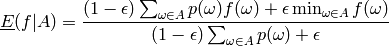
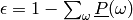
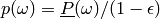
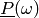
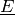

Bases: improb.lowprev.belfunc.BelFunc
Linear-vacuous mixture, implemented as a BelFunc whose natural extension is calculated via a much simpler formula; see get_lower(). Assessments on non-singletons, and conditional assessments, raise a ~exceptions.ValueError.
>>> from improb.lowprev.linvac import LinVac
>>> lpr = LinVac(3, lprob={(0,): '0.2'})
>>> print(lpr)
0 : 1/5
>>> lpr.extend()
>>> print(lpr)
0 : 1/5
1 : 0
2 : 0
>>> from improb.lowprev.prob import Prob
>>> lpr = Prob(3, prob=['0.2', '0.3', '0.5']).get_linvac('0.1')
>>> print(lpr.get_lower([1,0,0]))
9/50
>>> print(lpr.get_lower([0,1,0]))
27/100
>>> print(lpr.get_lower([0,0,1]))
9/20
>>> print(lpr.get_lower([3,2,1]))
163/100
>>> print(lpr.get_upper([3,2,1]))
183/100
>>> lpr = Prob(4, prob=['0.42', '0.08', '0.18', '0.32']).get_linvac('0.1')
>>> print(lpr.get_lower([5,5,-5,-5]))
-1/2
>>> print(lpr.get_lower([5,5,-5,-5], set([0,2]))) # (6 - 31 * 0.1) / (3 + 2 * 0.1)
29/32
>>> print(lpr.get_lower([-5,-5,5,5], set([1,3]))) # (6 - 31 * 0.1) / (2 + 3 * 0.1)
29/23
>>> print(lpr.get_lower([0,5,0,-5])) # -(6 + 19 * 0.1) / 5
-79/50
>>> print(lpr.get_lower([0,-5,0,5])) # (6 - 31 * 0.1) / 5
29/50
Calculate the lower expectation of a gamble conditional on an event, by the following formula:

where  and . Here,  is simply:
self[{omega: 1}, True][0]
This method will not raise an exception, even if the assessments are incoherent (obviously, in such case,  will be incoherent as well). It will raise an exception if not all lower probabilities on singletons are defined (if needed, extend it first).